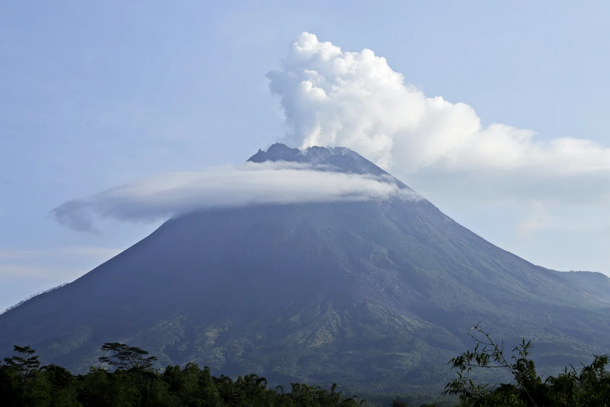
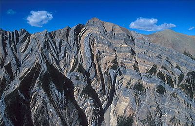
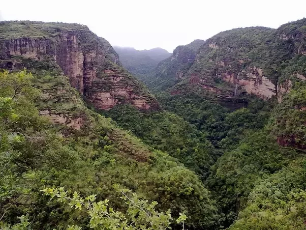
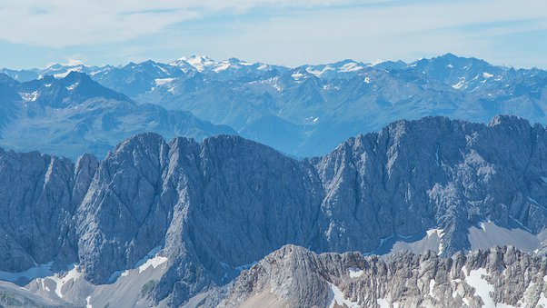
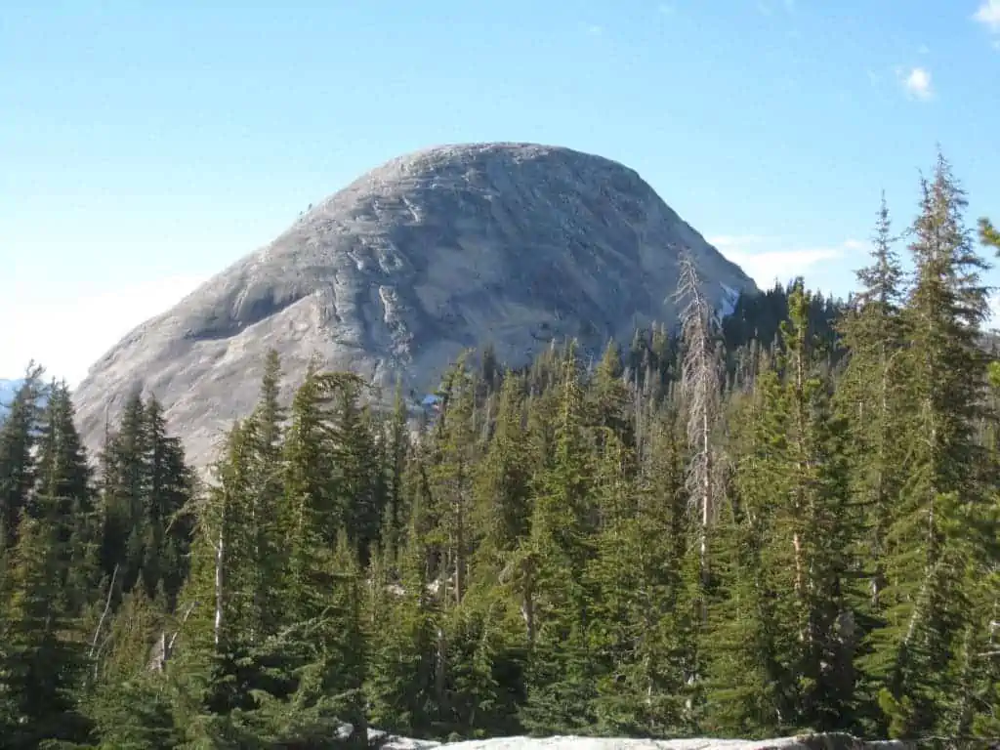

volcanic Mountains
When tectonic plates move about, volcanoes are formed, and when volcanoes erupt,
mountains are formed in turn. The famous volcanic mountains are
stratovolcanoes or shield volcanoes. A shield volcano has a gently sloping cone. The composite
volcano or stratovolcano has a more steeply rising cone (33°-40°).
MOUNTAINS
Type of Mountains


Fold Mountains
Fold mountains are created where two or more of Earth’s tectonic plates are pushed
together. At these colliding, compressing boundaries, rocks and debris are warped
and folded into rocky outcrops, hills, mountains, and entire mountain ranges.

Block Mountains
The raising of a fault block leads to the formation of block mountains. Higher
blocks are called horsts and troughs are known as grabens. When the surface is
spread apart, it leads tensional forces coming into place when these tension forces
split apart; it causes the centre block to drop down. An example of this is the
Sierra Nevada Range in the United States.

Residual Mountains
Through an erosion of an elevated area residual mountains are formed. Alternatively
such formations are also known as mountains of denudation. The Scottish Highlands,
Scandanavian Mountains, and the landmass of the Balkan Peninsula are examples of
Residual Mountains.

Dome Mountains
Dome mountains are formed when large globs of magma float up from beneath the
crust and push up surface rocks, creating a rounded swelling in the crust. Once
the magma cools, it creates a large dome of harder rock under the surface, which
erosion sometimes reveals.